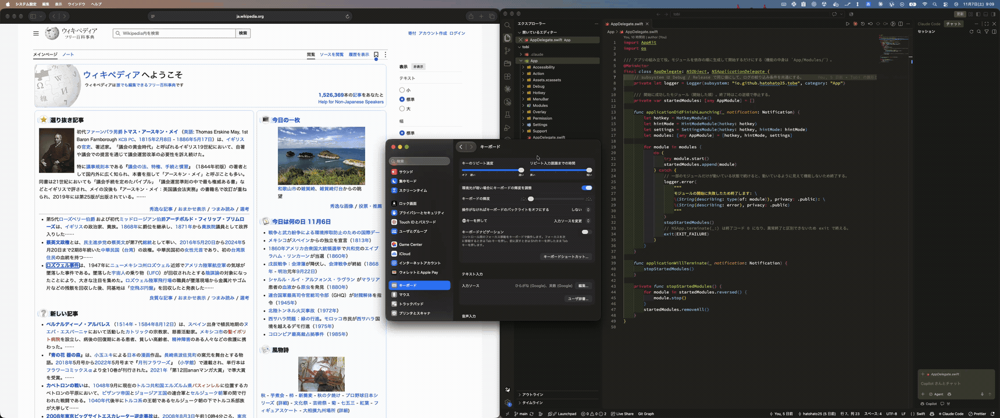

飛べ、または “to be”
⌘ をタップ。 ラベルを入力。 クリック完了。
Tobe は、Vimium のヒントモードを macOS 全体で使えるようにするアプリです。ボタン、リンク、テキストフィールド、メニュー項目、タブに短いラベルが付き、入力するとその要素をクリックします。マウスやトラックパッドは必要ありません。
右の ⌘ キーをタップしても試せます。このページには簡単なヒントモードが入っています。

使い方は 3 ステップ
-
起動キーをタップする
ほかのキーを押さずに、300 ms 以内に押して離します。⌘C などのショートカットは、これまでどおり使えます。
-
ラベルを入力する
一致しないラベルは隠れます。打ったキーは Tobe だけが受け取るので、テキストフィールドに文字が入ることはありません。大文字と小文字は区別しません。
-
Tobe がクリックする
あるラベルが別のラベルの先頭と一致することはないので、一致するラベルが 1 つになった時点でクリックします。Backspace で 1 文字消し、Esc で取り消します。
知っておくこと
できること
- 権限は 1 つだけアクセシビリティだけです。入力監視の許可は必要ありません。
- Web の中身にも対応Safari、VS Code などの Electron アプリ、Chrome などの Chromium 系ブラウザに対応しています。
- 変更できる設定起動キー（右 ⌘ または右 ⌥）、ラベルの文字、フォントサイズと色、ログイン時に開くかどうか。
- オープンソースMIT ライセンスで GitHub に公開しています。
苦手なこと
- 独自に UI を描画するアプリWezTerm や多くのゲームでは、ラベルが付くのはウインドウの枠だけです。
- Secure Inputパスワードの入力欄などでは macOS がキー入力を Tobe に送らないため、ヒントモードに入れないことがあります。
- Electron と Chromium 系のアプリTobe からアプリに中身の公開を依頼するので、CPU とメモリの使用量が増えることがあります。Chromium 系ブラウザでは、ウインドウ管理ツールの動作に影響することがあります。
- 初期リリース動作を確認している OS は macOS 26 と 27 だけです。既知の制限をすべて見る
インストール
Homebrew
Homebrew は公式以外の tap の Cask を信頼するまで読み込まないので、先に Tobe の Cask を信頼します。
brew trust --cask hatohato25/tobe/tobe
brew install --cask hatohato25/tobe/tobe初回起動
初めて開くときは Gatekeeper に止められます。quarantine 属性を取り除くか、システム設定の「プライバシーとセキュリティ」で このまま開く をクリックしてください。
xattr -dr com.apple.quarantine /Applications/Tobe.app